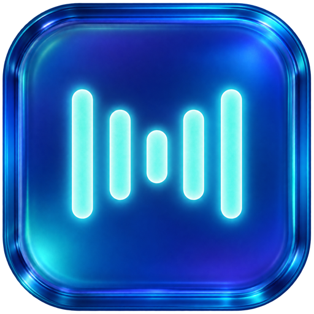

Normal
Whisper small · 466 MiB
Recommended: MacBook Air M5 with 16 GB unified memory.

LocalFlowLocalFlow turns speech into text with a local Whisper model. Pick one of three modes. The app downloads only the model you select and runs dictation without a cloud AI provider.
Build LocalFlow from source ↗
Whisper small · 466 MiB
Recommended: MacBook Air M5 with 16 GB unified memory.
Whisper large-v3-turbo · 1.5 GiB
Recommended: MacBook Pro M5 Pro with 24 GB unified memory.
Whisper large-v3 · 2.9 GiB
Recommended: MacBook Pro M5 Max with 48 GB unified memory.
Mac recommendations are practical estimates, not benchmarked minimums. Larger models use more memory and can take longer to respond.
LocalFlow is based on the open source FreeFlow project.